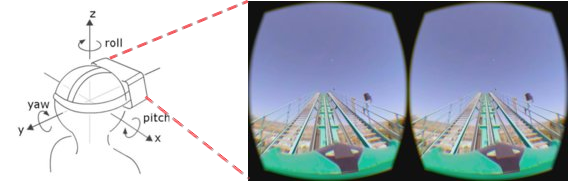
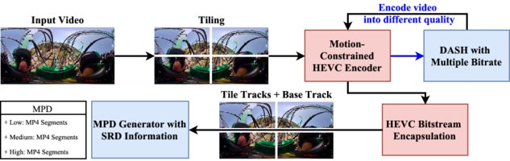
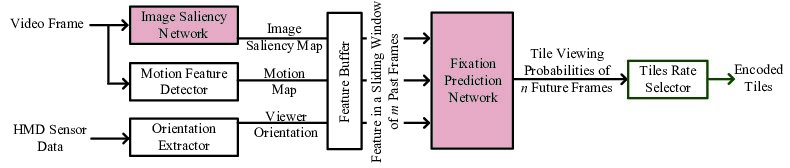
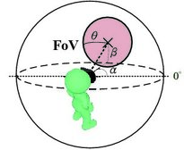

Performance Measurements of 360° Video Streaming to HMDs over 4G Cellular Networksby Wec-Chih
Streaming 360° videos further increases the Internet traffic amount.
In particular, streaming videos coded in 4K or higher resolutions leads to insufficient bandwidth and overloaded decoder. As shown in
Fig. 4, when watching 360° videos, a viewer wearing an HMD rotates his/her head to actively change the viewing orientation.
Viewing orientation can be described by yaw, pitch, and roll, which correspond to rotating along x, y, and z axes.
A viewer with HMD only gets to see a small part of the whole video.
Most of the 360° videos won’t be viewed by a viewer, and thus streaming the whole 360° videos may be unnecessary.

Figure 4: A viewer watches a part of whole 360° video with an HMD.
To solve this problem, Fig. 5 shows that a video is split into tiles of sub-videos, which are then encoded by HEVC (High Efficiency Video Coding) codec into video bitstreams.
Then, we stream them using MPEG Dynamic Adaptive Streaming over HTTP (DASH), an adaptive streaming technology for delivering
videos over the Internet.
For DASH streaming systems, each tile is encoded into multiple versions at different bitrates.
This provides the ability for a client to switch among different bitrates or quality levels.
Having multiple tiles allows each client to only request and decode those tiles that will be watched, in order to conserve resources.
However, splitting a video into tiles may reduce the coding efficiency, compared to a single non-tiled video.

Figure 5: Overview of the pre-processing procedure of our 360° video streaming platform.
Therefor, we design several experiments for quantifying the performance of 360° video streaming over a real cellular network on our campus.
In particular, we investigate diverse impacts of tile streaming over 4G networks, such as the coding efficiency, the potential of saving bandwidth, and the number of the supportable clients.
Our experiments make several interesting findings, for example, (i) only streaming the tiles viewed by the viewer achieves bitrate reduction by up to 80%, and (ii) the coding efficiency of 3x3 tiled videos may be higher than non-tiled videos at higher bitrates.
View details »
06
2017
Fixation Prediction for 360° Video Streamingby Wec-Chih
Leveraging commodity HMDs for 360° video streaming is, however, very challenging for two reasons.
First, 360° videos contain much more information than conventional videos, and thus are much larger in resolutions and file sizes.
With HMDs, each viewer only gets to see a small part of the whole video.
Therefore, sending the whole 360° video in full resolution may lead to waste of resources, such as network bandwidth, processing power, and storage space.
Another way to stream 360° videos to HMDs is to only stream the current FoV of the viewer.
We emphasize current, because the FoV changes as the viewer’s head and eyes move, which leads to the following main challenge: which FoV should we transfer to meet the viewer’s needs in the next moment.

Figure 2: Overview of the proposed 360° video streaming server. A tile streaming example is shown.

Figure 3: The FoV model.
Fig. 2 presents our proposed architecture of a 360° streaming server, in which we focus on the software components related to fixation prediction.
We have identified two types of content-related features: image saliency map, motion map, and sensor-related features, such as orientations and angular speed, from HMDs.
The video frames are sent to the image saliency network and motion feature detector for generating the image saliency map and the motion map, respectively.
Generating these two maps is potentially resource demanding, and we assume that they are created offline for pre-recorded videos.
Fig. 3 presents the FoV model of HMDs. The viewer stands at the center of the sphere. Let α and β be the yaw and pitch, which are reported from the sensors equipped by HMDs.
The HMD sensor data are transmitted to the orientation extractor to derive the viewer orientations.
The feature buffer maintains a sliding window that stores the latest image saliency maps, motion maps, and viewer orientations as the inputs of fixation prediction network.
The video fixation prediction network predicts the future viewing probability of each tile. The tile rate selector optimally selects the rates of the encoded video tiles.
View details »
06
2017
360° Video Viewing Dataset in Head-Mounted Virtual Realityby Wec-Chih
Using conventional displays to watch 360° videos is often less intuitive, while recently released HMDs, such as Oculus Rift, HTC Vive, Samsung Gear VR, offer wider Field-of-Views (FoVs) and thus more immersive experience.
Since a viewer never sees a whole 360° video, streaming the 360° video in its full resolution wastes resources, including bandwidth, storage, and computation.
Therefore, each 360° video is often split into grids of sub-images, called tiles.
With tiles, an optimized 360° video streaming system to HMDs would strive to stream only those tiles that fall in the viewer’s FoV.
However, getting to know each viewer’s FoVs at any moment of every 360° video is not an easy task.
To better address the challenge, a large set of the content and sensor data from viewers watching 360° videos with HMDs is crucial.
To overcome such limitation, and promote reproducible research, we build up our own 360° video testbed for collecting traces from real viewers watching 360° videos using HMDs.
The resulting dataset can be used to, for example, predict which parts of 360° videos attract viewers to watch the most. The dataset, however, can also be leveraged in various novel applications in a much broader scope.
View details »